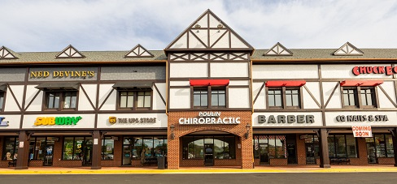
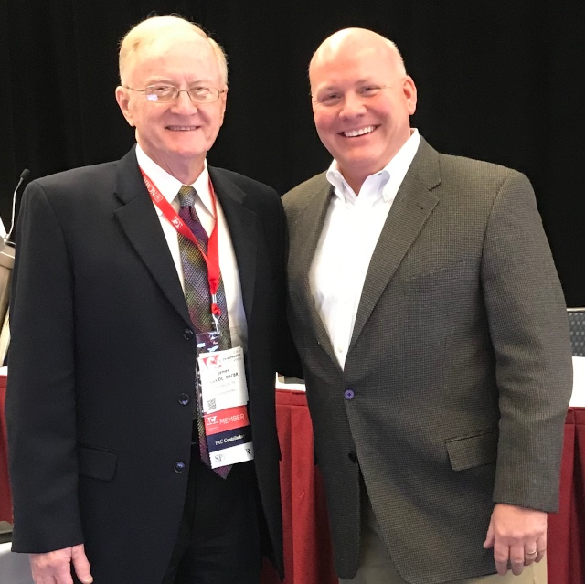
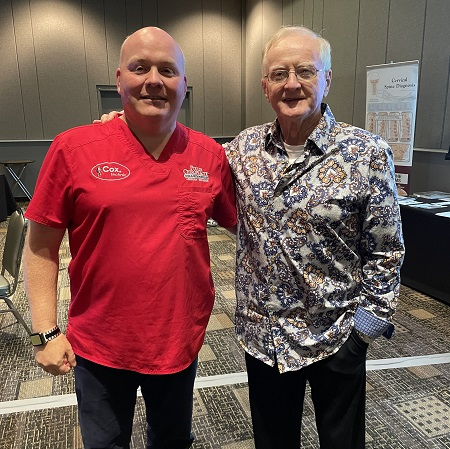
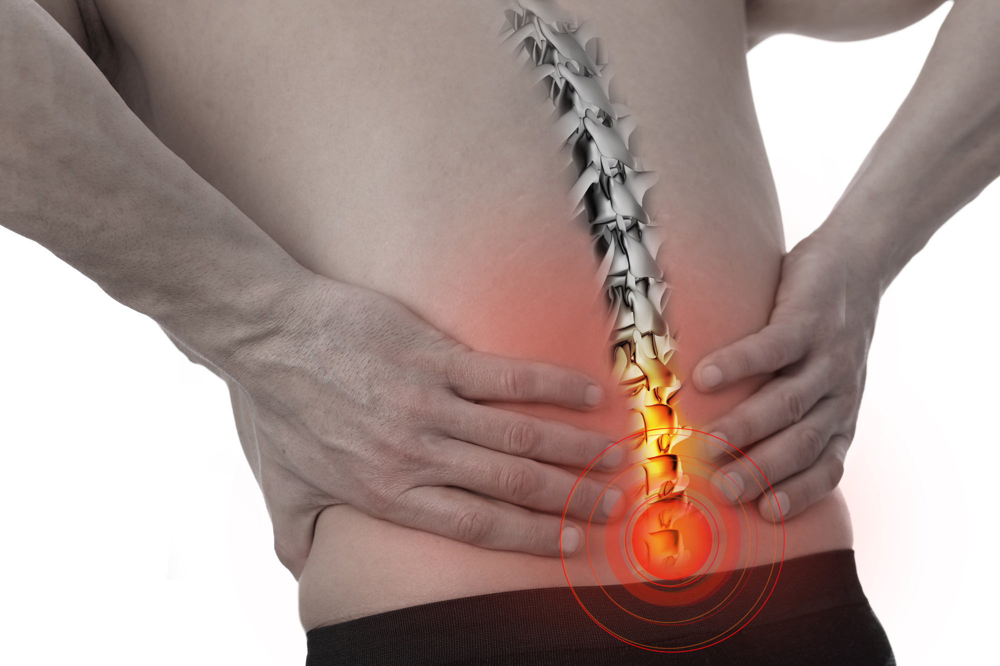
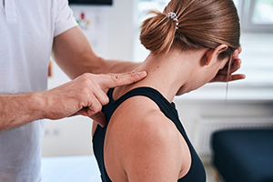
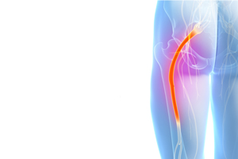
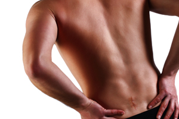
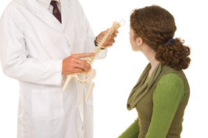
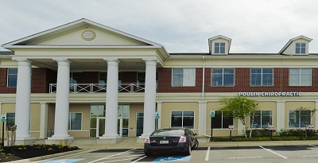

For more than three decades, Poulin Chiropractic has offered calm, research-informed care for patients seeking a more measured, non-surgical path forward for spine and disc conditions.
Poulin Chiropractic has served patients across Fairfax and Loudoun County since 1993, helping people navigate pain, uncertainty, and recovery with a calm, evidence-based approach to chiropractic treatment.
Dr. Poulin is known for careful assessment, clear communication, and treatment that prioritizes precision over force. The goal is not just short-term relief, but a smarter path forward for patients dealing with disc problems, neck pain, sciatica, and persistent spinal discomfort.
That clinical trust is reflected in regular referrals from neurosurgeons, orthopedic surgeons, pain specialists, general practitioners, and other physicians who want their patients to explore a non-surgical option first.
Dr. Poulin had the privilege of studying and working directly alongside Dr. James M. Cox I, founder of Cox Technic, which gives this practice an unusually direct connection to the original method and its clinical intent.
Patients often arrive here after recommendations from specialists who value a measured, research-supported chiropractic approach before moving further toward invasive care.


Dr. Cox & Dr. Poulin — ACA Conference, Jan. 2020

Dr. Poulin & Dr. Cox — Cox Seminar, Sept. 2021
1 in 3 people in the U.S. experiences back pain at any given time. You don't have to live with it.

Hands-on, research-documented chiropractic relief for back pain.

Spending all day at a screen? Let us help relieve your cervical pain.
Chiropractic care of spine-related arm pain and shoulder pain.

Non-surgical chiropractic relief for leg pain and sciatica.

Still in pain after back or neck surgery? There is hope.

Disc herniations, stenosis, spondylolisthesis, scoliosis & more.
The most researched chiropractic method for spine pain relief. Using a specialized table, Dr. Poulin applies gentle traction that decompresses spinal discs and nerves — no forceful cracking, no surgery.
A broader mix of public patient feedback points to the same themes again and again: meaningful pain relief, clear explanations, a caring team, and confidence in Dr. Poulin’s conservative spine care approach.
Read More Reviews on GoogleA patient dealing with severe sciatica after trying medication, physical therapy, and injections described finally finding meaningful relief here when other options had not worked.
One reviewer recovering from major spine procedures shared that continued neck, back, and leg pain improved with Dr. Poulin’s care when they were still searching for lasting relief.
A patient with rib pain reported noticeable improvement after the first adjustment and said the discomfort was gone within days, while also praising the courtesy of the staff.
Longtime patients repeatedly describe Dr. Poulin as attentive, professional, and dependable, especially when flare-ups happen after falls or sudden back and neck pain episodes.
Another reviewer described arriving with intense lower-back pain that made normal movement difficult, then feeling reassured by the step-by-step explanations and treatment plan.
Across public reviews, patients consistently mention a friendly front desk, a clean office, clear education about treatment, and a calm atmosphere that reduces anxiety.

Schedule your first appointment today. Dr. Poulin and his team are ready to help you reclaim your quality of life.